¿Qué es una galaxia? Anatomía de la Vía Láctea
La clase inaugural del curso parte de una pregunta engañosamente simple — ¿han visto alguna vez una galaxia? — y termina desarmando la nuestra pieza por pieza: disco, bulbo, halo, cúmulos, corrientes estelares, burbujas de rayos gamma y un agujero negro supermasivo al centro. En el camino, dos paréntesis instrumentales: cómo se construyen las imágenes astronómicas "en color" y cómo se miden distancias con paralaje.
¿Han visto alguna vez una galaxia? La respuesta es sí, aunque no lo sepan: cada vez que miran la franja lechosa de la Vía Láctea en un cielo oscuro están mirando nuestra propia galaxia desde adentro, y desde el hemisferio sur también se ven a ojo desnudo las dos Nubes de Magallanes, galaxias satélites vecinas. Con ese gancho, la clase define qué es una galaxia por sus componentes — estrellas, material entre las estrellas y materia oscura — y luego recorre la arquitectura de la Vía Láctea. Para alguien con formación de ingeniería, es una clase de ingeniería inversa: reconstruir el plano de un sistema gigantesco desde un único punto de medición interior, con instrumentos que además hay que entender (filtros, composición de color, paralaje) para no malinterpretar los datos.
¿Han visto alguna vez una galaxia?
Sí: la nuestra desde adentro, y dos satélites a ojo desnudo desde el sur.
La clase abre con esta pregunta y tres respuestas visuales. La primera es la Vía Láctea misma: esa banda difusa que cruza el cielo nocturno es el disco de nuestra galaxia visto de canto, desde nuestra posición dentro de él. La segunda es una galaxia externa "de libro": la galaxia Molinillo (NGC 5457, M101), una espiral vista de frente donde se distinguen el núcleo amarillento y los brazos azulados salpicados de regiones rosadas de formación estelar.
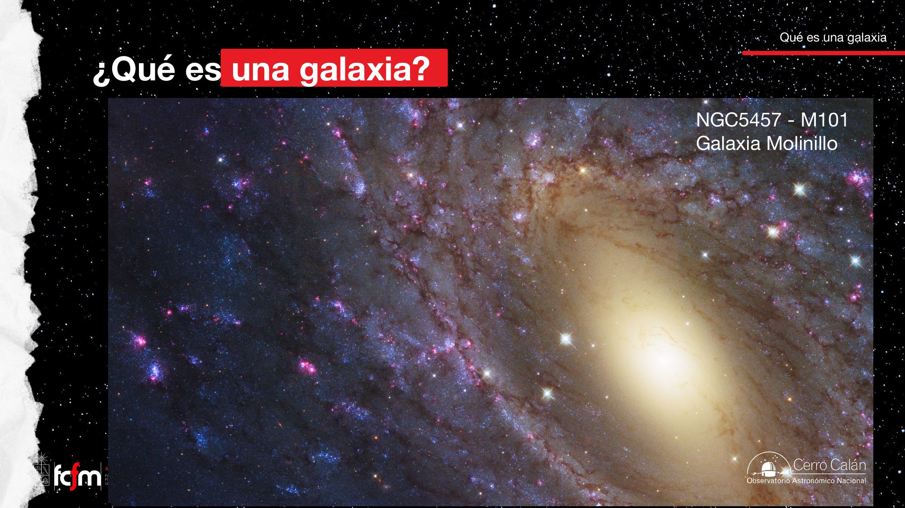
La tercera respuesta es privilegio del hemisferio sur: las Nubes de Magallanes, dos galaxias satélites de la Vía Láctea visibles a simple vista como manchones tenues, aquí fotografiadas sobre el observatorio Paranal.
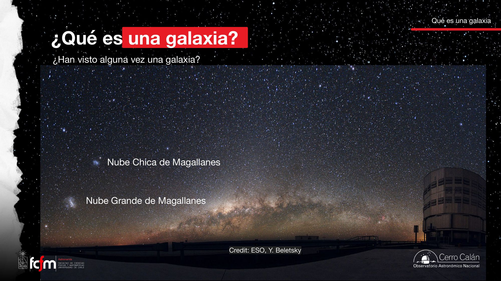
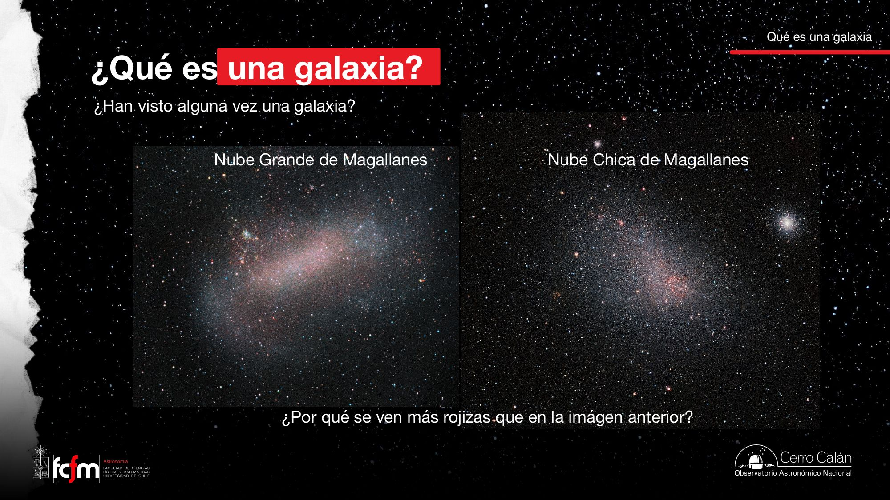
¿Por qué las Nubes se ven más rojizas en una foto que en la otra? Porque una imagen astronómica "en color" no es una fotografía directa: depende de qué filtros se usaron, cuánto se expuso cada uno y cómo se combinaron y estiraron los tonos. Dos composiciones legítimas del mismo objeto pueden verse muy distintas. Eso es exactamente lo que desarrolla la sección siguiente.
Paréntesis 1: cómo se construyen las imágenes en color
Filtros B, V, I → canales R, G, B → decisiones de contraste. El color astronómico es una composición.
Los detectores astronómicos (CCD) son esencialmente monocromáticos: cuentan fotones, no colores. Para obtener color se toman varias imágenes del mismo objeto a través de distintos filtros — por ejemplo B (azul, ~440 nm), V (visual/verde, ~550 nm) e I (infrarrojo cercano, ~800 nm) — y luego se asigna cada exposición a un canal de color (azul, verde, rojo) para componer la imagen final.
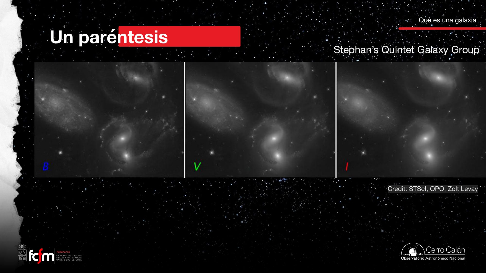
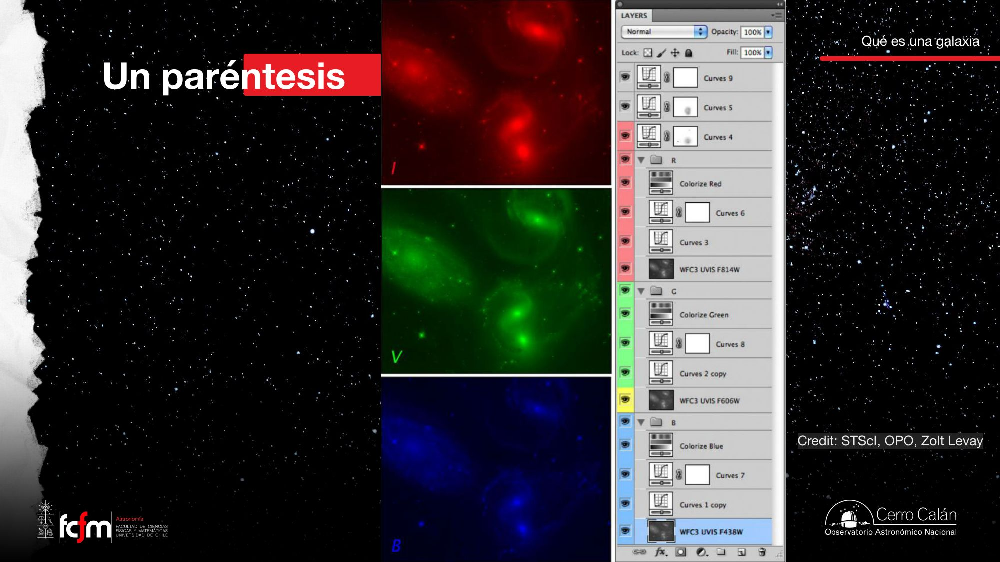
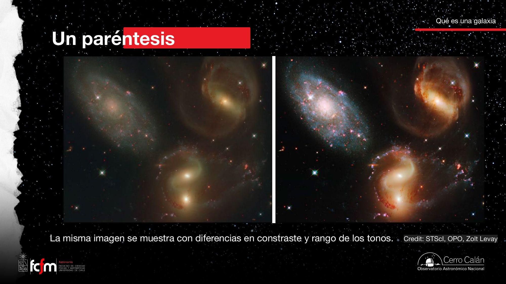
El punto se completa comparando la misma galaxia observada en rangos de longitud de onda distintos: la espiral M74 vista por Hubble (óptico) y por Webb (infrarrojo) parece casi otro objeto — en el infrarrojo el polvo deja de ocultar y pasa a brillar, revelando el esqueleto de gas y polvo de los brazos.
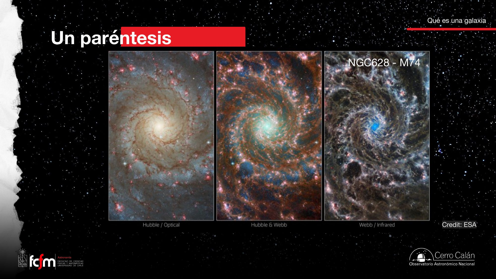
Una imagen astronómica en color es un pipeline de visualización de datos multicanal: tres (o más) señales monocromáticas → asignación de canales → mapeo de rango dinámico (curvas, estiramiento logarítmico) → render. Igual que en un mapa de calor, la paleta y el escalado son decisiones del analista. Moraleja de metrología: antes de interpretar "colores", pregunta siempre qué filtros y qué estiramiento se usaron — es leer la ficha de calibración antes de leer el dato.
Paréntesis 2: paralaje, el parsec y Gaia
Cómo se mide "lejos": triangulación con la órbita terrestre como base.
Para hablar de la estructura de la galaxia hay que poder medir distancias. El método fundamental es la paralaje: al orbitar el Sol, la Tierra se desplaza; una estrella cercana parece moverse contra el fondo de estrellas lejanas, describiendo una pequeña elipse anual. La mitad de ese vaivén angular es el ángulo de paralaje p. Conociendo la base de la triangulación — la distancia Tierra–Sol, 1 Unidad Astronómica = 149.600.000 km — la trigonometría entrega la distancia.
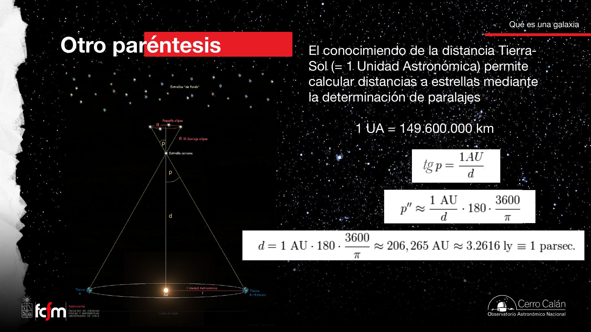
Es triangulación con línea base, como en topografía o visión estéreo: la resolución en profundidad se degrada con la distancia porque el ángulo cae como . La aproximación de ángulo pequeño ( en radianes) es válida siempre en este régimen: 1″ ≈ 4,85×10⁻⁶ rad. Medir 1″ es resolver el grosor de una moneda a unos 4 km — el problema es de relación señal/ruido angular, no de concepto.
El salto de calidad moderno es el satélite Gaia: según el gráfico de la clase, ha medido posiciones, distancias y movimientos de más de mil millones de estrellas de la Vía Láctea, con distancias confiables (error ~10 %) hasta 10.000 parsecs — un cuarto del disco galáctico. Su predecesor Hipparcos llegaba solo a ~100 pc y ~100.000 estrellas: dos órdenes de magnitud menos de alcance y cuatro de catálogo.
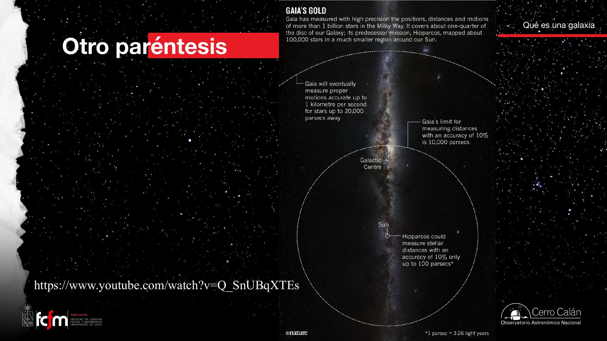
Componentes de una galaxia
La definición operativa de la clase: tres ingredientes, uno de ellos un misterio.
Con las herramientas listas, la clase responde la pregunta del título con una lista de componentes (diapositiva 13, textual):
- Estrellas y sus sistemas planetarios: material gravitacionalmente colapsado.
- Lo que hay entre las estrellas: podríamos hablar de "material suelto" — gas y polvo aún no colapsado (el medio interestelar).
- Materia oscura: "aquí no tenemos mayor idea" — sabemos que está por sus efectos gravitacionales, pero no qué es.
El mecanismo que conecta el ingrediente 2 con el 1 es el colapso gravitacional: una nube de gas interestelar suficientemente densa y fría se contrae bajo su propio peso hasta formar estrellas. Es la máquina que convierte "material suelto" en material colapsado, y reaparecerá al hablar del disco.
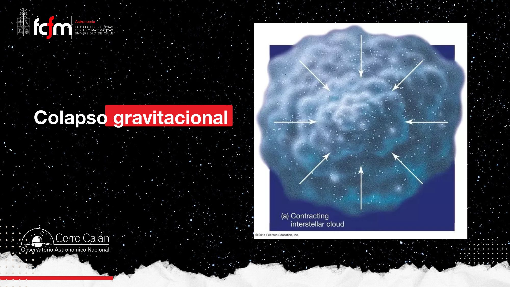
El colapso es una competencia entre dos términos: la presión térmica (∝ temperatura) que sostiene la nube y la autogravedad (∝ masa/tamaño) que la comprime. Por eso las estrellas nacen en nubes densas y frías: frío = poca presión de soporte, denso = mucha gravedad. En el lenguaje de sistemas dinámicos, la nube uniforme es un equilibrio inestable; una perturbación de densidad crece en forma desbocada (inestabilidad de Jeans, que el curso formalizará más adelante).
Nótese el tono de la diapositiva: para las estrellas hay mecanismo (colapso), para el gas hay inventario, pero para la materia oscura la clase declara abiertamente que no tenemos mayor idea de su naturaleza. Es el componente dominante en masa de las galaxias y a la vez el peor entendido — un tema que el curso retomará.
La Vía Láctea: plano general
Una espiral barrada de ~120.000 años luz vista desde adentro.
El resto de la clase aplica la definición a nuestra galaxia. Primero, la vista real: el panorama de 360° del cielo completo muestra el disco de canto, con el bulbo brillante hacia el centro (constelación de Sagitario), franjas oscuras de polvo, y las Nubes de Magallanes abajo a la derecha.
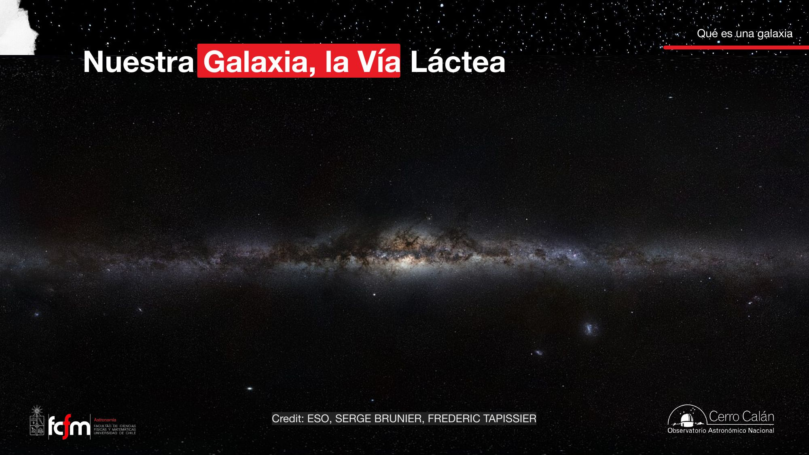
Luego, el plano reconstruido "desde arriba": la Vía Láctea es una espiral con barra central y brazos mayores. El Sol no está en el centro: vive en una espuela menor (Orion Spur), a unos dos tercios del radio del disco.
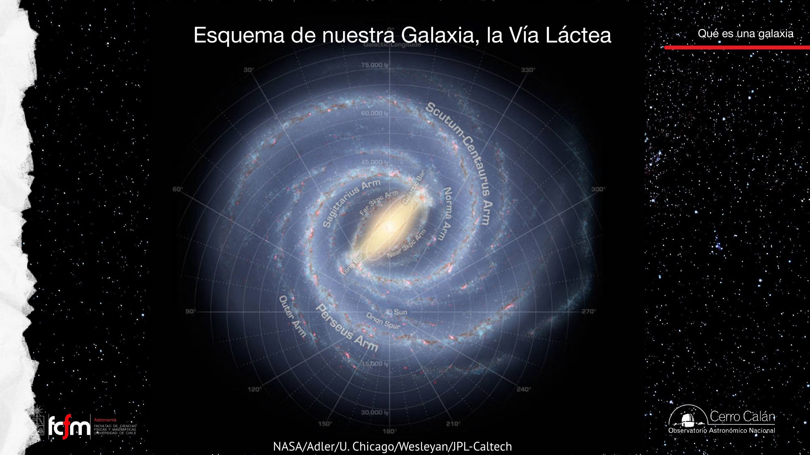
Reconstruir este mapa es un problema de estimación de estado con observabilidad limitada: un único sensor (nosotros) embebido en el sistema, midiendo direcciones con precisión pero distancias con error creciente. Por eso el esquema de la diapositiva es un modelo — mezcla de conteos estelares, paralajes de Gaia, y radioastronomía — y por eso detalles como el número exacto de brazos siguen revisándose.
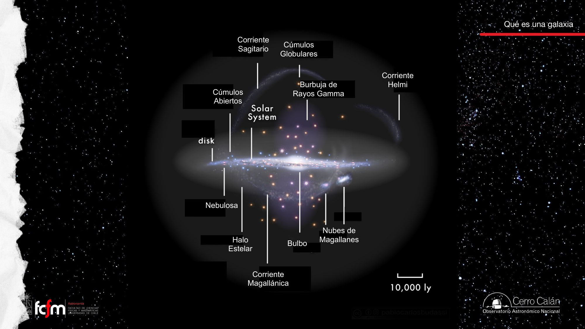
El disco: la fábrica de estrellas
~1.000 años luz de grosor, ~120.000 de diámetro, 4 brazos mayores y rotación.
Según la diapositiva 21, el disco es la componente más característica de la Vía Láctea: ~1.000 años luz de grosor y ~120.000 años luz de diámetro — una razón de aspecto ~1:100, como un DVD. Presenta una ligera ondulación (warp), no poco común en galaxias de este tipo, y tiene 4 brazos espirales mayores: Perseus, Centauro, Sagitario y Carina, y Norma. Su dinámica es esencialmente de rotación ordenada.
La clase distingue dos subcomponentes:
- Disco delgado: estrellas jóvenes y de mayor contenido de metales, más polvo y gas, a partir del cual se forman nuevas estrellas.
- Disco grueso: mucho menos masivo, con mucho menos gas, menos polvo y estrellas más viejas.
La diapositiva 21 dice que el disco delgado tiene estrellas jóvenes y de mayor metalicidad "(Población II)". Por la convención estándar — y por la propia diapositiva 20, que asigna Población II a las estrellas viejas y pobres en metales del bulbo — lo consistente es que las estrellas jóvenes y ricas en metales del disco delgado sean Población I. Lo marcamos como probable errata de la lámina.
Formación estelar: nubes moleculares, regiones HII y cúmulos abiertos
El disco es donde ocurre la formación estelar activa (diapositiva 22). La secuencia que describe la clase:
- Las estrellas se forman por colapso gravitacional de nubes de gas densas y frías: las nubes moleculares.
- Las estrellas recién formadas calientan e ionizan su vecindad, creando nebulosas brillantes: las regiones HII (hidrógeno ionizado).
- Por un tiempo las estrellas hermanas permanecen ligadas gravitacionalmente en un cúmulo abierto; luego el cúmulo se desintegra y las estrellas pueblan el disco de forma independiente.
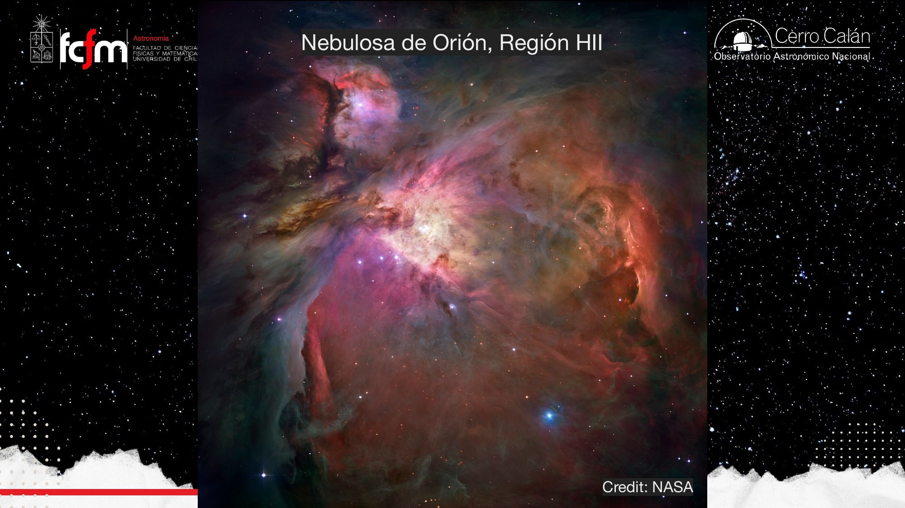
El disco funciona como una línea de producción con reciclaje: materia prima (gas frío) → ensamblaje (colapso) → productos (estrellas) que devuelven parte del material enriquecido al medio. El cúmulo abierto que se desintegra es un lote de producción que se dispersa en el inventario general. Que el disco delgado concentre el gas y las estrellas jóvenes es la firma de que ahí está la línea activa.
El bulbo
Estrellas viejas, pobres en metales, en órbitas desordenadas.
El bulbo (diapositiva 20) es la concentración central de estrellas, de forma achatada. Sus propiedades definen un contraste sistemático con el disco:
- La mayoría de sus estrellas son de Población II: bajo contenido de metales y formadas hace miles de millones de años.
- Se presume que se originó de nubes de gas formadas relativamente poco después del Big Bang.
- Su dinámica corresponde esencialmente a órbitas aleatoriamente orientadas — no a rotación ordenada como el disco.
"Metales" en astronomía significa todo elemento más pesado que el helio. Como los metales se fabrican dentro de las estrellas y se dispersan cuando estas mueren, la metalicidad funciona como un timestamp químico: gas primitivo → estrellas pobres en metales (Población II); gas reciclado por generaciones previas → estrellas ricas en metales (Población I). Y la dinámica es otro fósil: órbitas aleatorias ("soportadas por dispersión") delatan un origen violento o muy temprano, mientras que la rotación ordenada del disco delata un colapso con conservación de momento angular. Composición + cinemática = arqueología galáctica.
El halo estelar y el canibalismo galáctico
Cúmulos globulares casi tan viejos como el universo, y corrientes de estrellas: cicatrices de fusiones.
El halo estelar (diapositiva 24) es la envoltura difusa que se extiende más allá de 100.000 años luz del centro. Contiene cúmulos globulares, estrellas viejas y corrientes estelares.
Los cúmulos globulares son conjuntos de miles a cientos de miles de estrellas, llamados así por su forma casi esférica. Están formados por estrellas muy antiguas (Población II): se calcula que tienen entre 11.000 y 13.000 millones de años — casi la edad del universo.
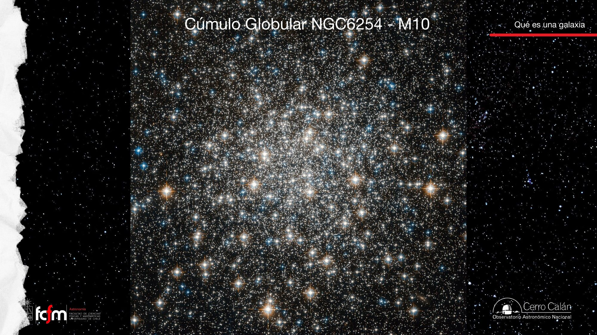
De la formación in situ al canibalismo
La diapositiva 24 relata un cambio de paradigma: antes predominaba la idea de que las estrellas del halo se formaron in situ (donde están). El tiempo demostró la enorme importancia de los procesos de acreción y fusión de galaxias satélites que se integran a la Vía Láctea. Estos mecanismos de "canibalismo" aún pueden observarse en las corrientes de estrellas (stellar streams) — sistemas desmembrados por la interacción con nuestra galaxia, como las corrientes de Sagitario, Helmi y la Magallánica del diagrama maestro. Más aún: algunos cúmulos globulares parecen ser el núcleo de una galaxia enana acretada por la Vía Láctea.
Una corriente estelar es la respuesta al impulso del sistema: una galaxia enana que cae es estirada por fuerzas de marea y sus estrellas quedan dispersas a lo largo de la órbita, como el rastro de datos de un evento pasado. Leer corrientes para reconstruir fusiones es análisis forense de señales: del estado actual (posiciones y velocidades, hoy medibles con Gaia) se infiere la historia de entrada del sistema.
Las burbujas de Fermi
Dos lóbulos de rayos gamma de 25.000 años luz: el eco del agujero negro central.
Las burbujas de Fermi (diapositivas 26–27) son dos estructuras elipsoidales que se extienden ~25.000 años luz cada una hacia los lados norte y sur del plano galáctico. Fueron descubiertas el año 2010 por el telescopio espacial de rayos gamma Fermi — de ahí el nombre.
El escenario actual de consenso: las burbujas aparecieron por la acción de un "viento" nuclear debido a la actividad del agujero negro supermasivo existente en nuestra galaxia. Son la reliquia de pasados episodios de actividad de ese agujero negro: hoy está relativamente tranquilo, pero las burbujas prueban que no siempre lo estuvo.
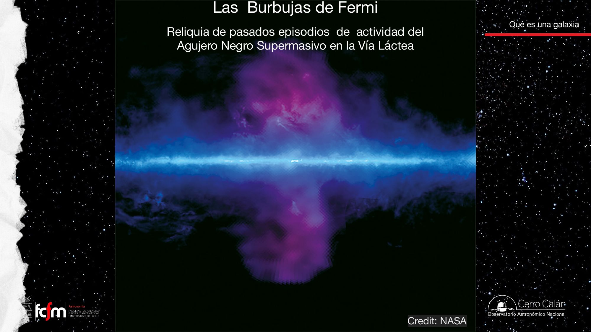
Cuando el agujero negro central acreta gas, parte de la energía liberada sale como radiación y vientos que inflan cavidades en el gas circundante — como una burbuja inflada desde un compresor central. La escala (25.000 ly) y la simetría norte-sur respecto al plano del disco delatan la fuente puntual central: el gas escapa por donde encuentra menos resistencia, perpendicular al disco. La nota de la diapositiva sobre el "Agujero Negro Superlativo" debe leerse como supermasivo (Sagitario A*, ~4 millones de masas solares — dato externo, no de la lámina).
Viaje al núcleo
Cúmulos masivos, regiones HII y el Cúmulo Estelar Nuclear alrededor del centro.
La clase cierra acercándose al centro galáctico, en dirección a Sagitario. La diapositiva 18 sitúa la perspectiva: la eclíptica (con solsticios y equinoccios marcados) proyectada contra el núcleo — mirar hacia Sagitario en el cielo es mirar hacia el corazón de la galaxia.
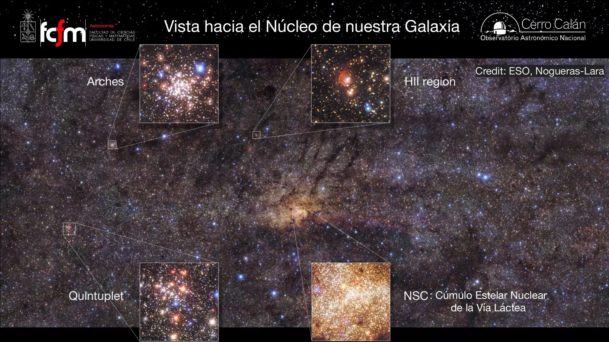
La última lámina invita a un "Viaje al Núcleo de nuestra Galaxia" con un video de ESO: eso.org/public/videos/eso1151d — un zoom continuo desde el cielo completo hasta las estrellas orbitando el agujero negro central. Muy recomendado como cierre visual de la clase (material externo enlazado por la propia diapositiva; nivel introductorio).
Una galaxia es estrellas + material suelto + materia oscura, organizados — en el caso de la Vía Láctea — en disco (rotación, gas, formación estelar, Población I), bulbo y halo (órbitas desordenadas, estrellas viejas de Población II), con cicatrices de fusiones (corrientes estelares) y un agujero negro supermasivo central cuyos episodios de actividad dejaron las burbujas de Fermi. Y dos advertencias metodológicas que valen para todo el curso: el color de una imagen astronómica es una composición, y toda distancia cuelga en última instancia de la paralaje.
Conceptos clave
Tabla de repaso rápido.
| Concepto | Qué es / valor | Por qué importa |
|---|---|---|
| Galaxia (componentes) | Estrellas y sistemas planetarios + material suelto + materia oscura | Definición operativa de la clase |
| Colapso gravitacional | Contracción de una nube densa y fría bajo su propio peso | Convierte gas en estrellas |
| Filtros B, V, I | Exposiciones monocromáticas → canales RGB | El color astronómico es una composición con decisiones humanas |
| Unidad Astronómica | 1 UA = 149.600.000 km (distancia Tierra–Sol) | Base de la triangulación por paralaje |
| Paralaje | ; d[pc] = 1/p[″] | El método fundamental de distancias |
| Parsec | 206.265 UA ≈ 3,2616 años luz (paralaje de 1″) | Unidad natural de distancia galáctica |
| Gaia / Hipparcos | >10⁹ estrellas, 10 kpc al 10 % / 10⁵ estrellas, 100 pc | Salto de 2 órdenes de magnitud en alcance |
| Disco | ~1.000 ly grosor, ~120.000 ly diámetro; warp; 4 brazos; rotación | Componente más característica; fábrica de estrellas |
| Disco delgado / grueso | Joven, metálico, con gas / menos masivo, viejo, sin gas | Dos historias de formación superpuestas |
| Nube molecular → región HII → cúmulo abierto | Cadena de formación estelar del disco | El ciclo de vida de un lote de estrellas |
| Bulbo | Achatado; Población II; pobre en metales; órbitas aleatorias | Componente viejo, origen poco post-Big Bang |
| Poblaciones I / II | Jóvenes ricas en metales / viejas pobres en metales | Timestamp químico de la historia galáctica |
| Halo estelar | >100.000 ly; cúmulos globulares, estrellas viejas, corrientes | Archivo de la historia de acreción |
| Cúmulos globulares | 10³–10⁵ estrellas; casi esféricos; 11–13 mil millones de años | De los objetos más antiguos; algunos son núcleos de enanas acretadas |
| Canibalismo / corrientes estelares | Acreción y fusión de satélites (Sagitario, Helmi, Magallánica) | Cambio de paradigma: el halo se construyó en parte por fusiones |
| Burbujas de Fermi | 2 lóbulos de ~25.000 ly c/u; descubiertas 2010 (rayos gamma) | Reliquia de actividad del agujero negro supermasivo |
| Núcleo: NSC, Arches, Quintuplet | Cúmulo Estelar Nuclear y cúmulos masivos centrales | El entorno extremo alrededor del agujero negro central |
Exámenes de práctica
10 exámenes de 5 preguntas (3 de alternativas autocorregibles + 2 de respuesta escrita).
- Examen 01¿Qué es una galaxia? Primeras vistas
- Examen 02Imágenes astronómicas en color
- Examen 03Paralaje y el parsec
- Examen 04Gaia y las distancias
- Examen 05Componentes y colapso gravitacional
- Examen 06El disco de la Vía Láctea
- Examen 07Bulbo y poblaciones estelares
- Examen 08Halo, cúmulos globulares y canibalismo
- Examen 09Burbujas de Fermi y el núcleo
- Examen 10Integrador